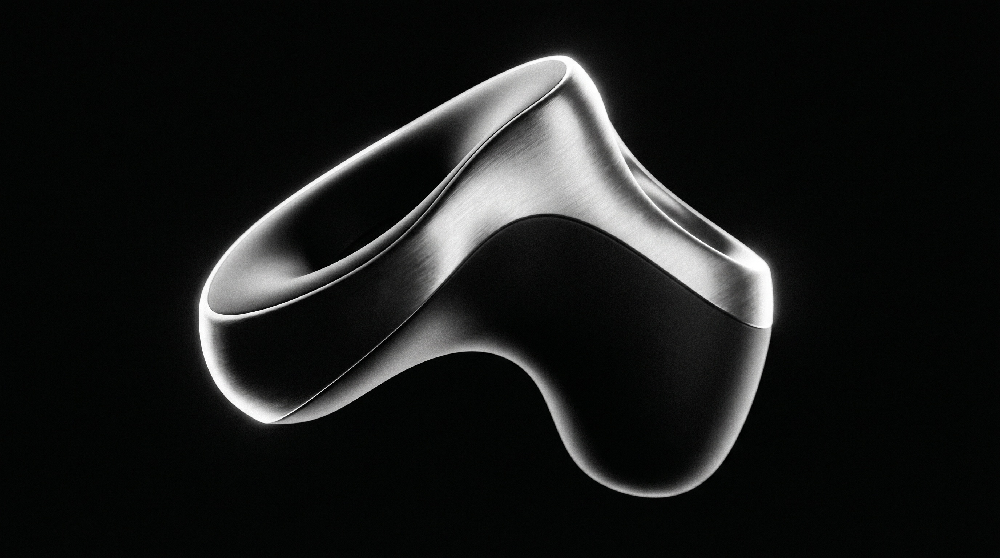
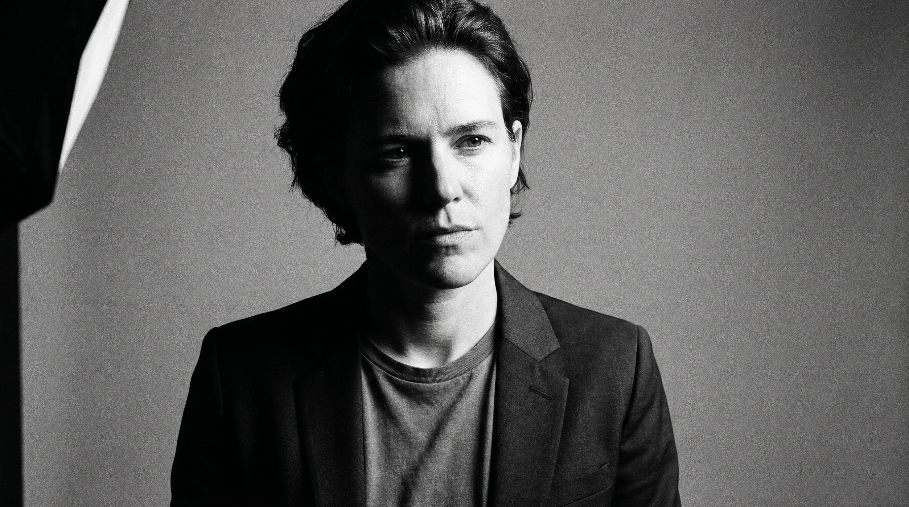
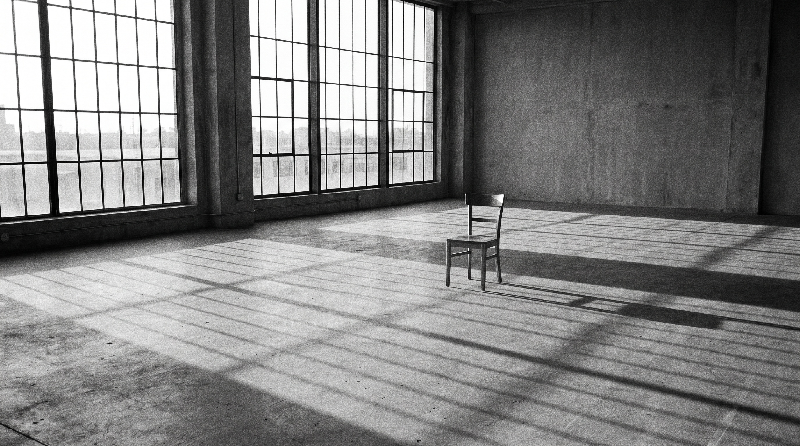
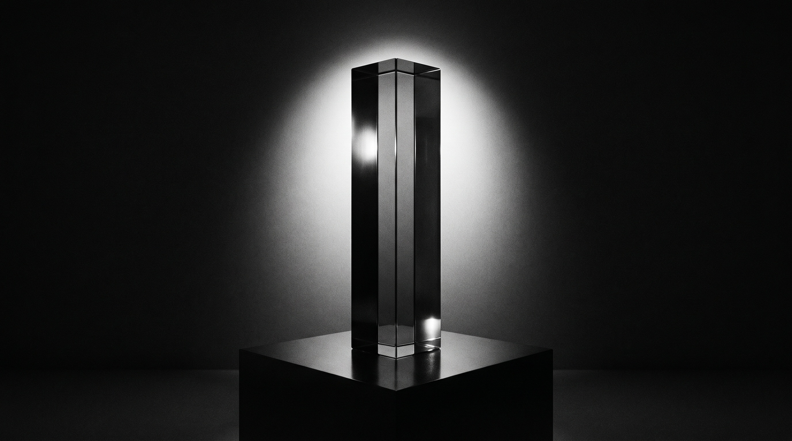
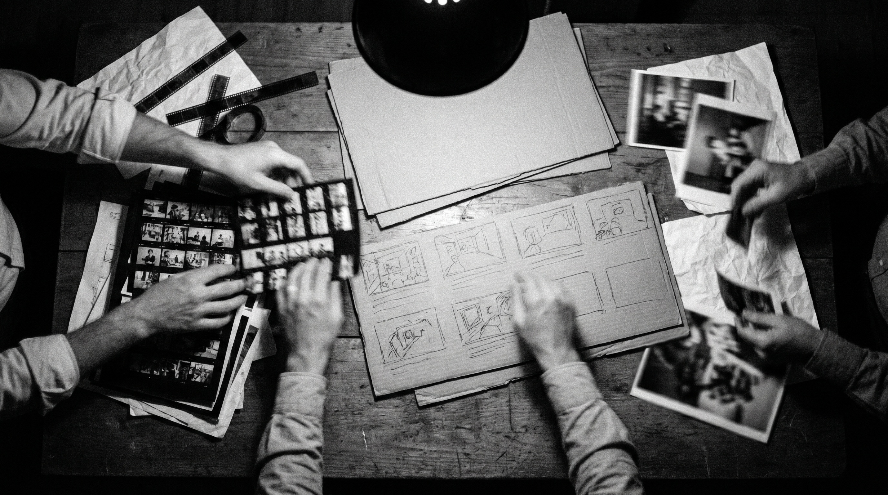
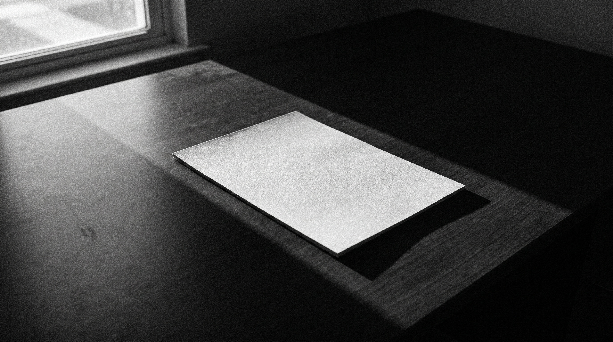

Wearable
A launch film that never showed the interface. Ninety seconds of a body in motion and one object that kept up.

Creative direction · Brand, film, product
Two decades turning products into culture — and the last twelve years shaping how the world feels about the objects in its pockets.
01 · The belief
Creative that does not enter the conversation is decoration. Every brief starts with one question: will anyone outside this room care? If not, we start again.

02 · The reel

A launch film that never showed the interface. Ninety seconds of a body in motion and one object that kept up.
One mark, twenty-eight markets, zero words. The identity is a waveform that every market re-records in its own voice.
Forty thousand posters and one word. The device tilted a few degrees further on every site, so the city itself became the animation.

The anthem film. No product for the first forty seconds — just the people the product was made for. It took the Grand Prix.
03 · The craft
I live between the blank page and the final release — leading multidisciplinary teams that feel safe taking real creative risks.

04 · Recognition
05 · The invitation
Open to select partnerships with ambitious brands and collaborators who believe in brave ideas. The page is blank and the cursor is blinking.
Start a conversation